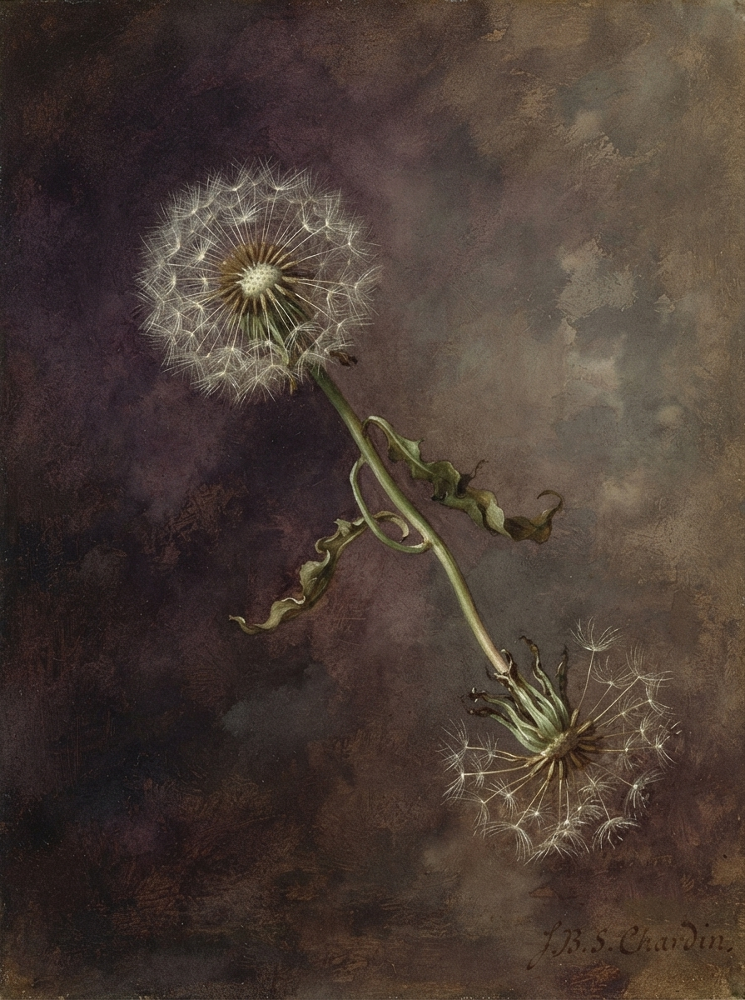

Дата: 22 сентября 1947 года
Произведение: «Одуванчики на тёмном»
Материал: холст, масло
Размер: 65 × 50 см
Происхождение: частное собрание, Швейцария
Первоначальная атрибуция: неизвестный автор; предположительно О. Редон или французская школа конца XIX века.

На рассмотрение комиссии представлено живописное произведение «Одуванчики на тёмном», ранее не имевшее установленного авторства.
Одновременно представлены четыре графических листа из личного архива, служащие материалом для сравнения техники и пигментного состава.